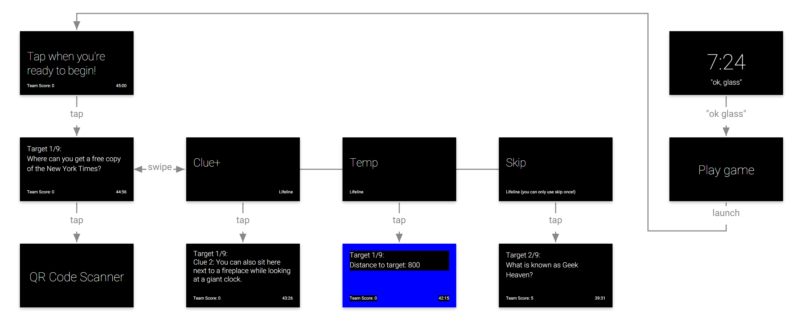
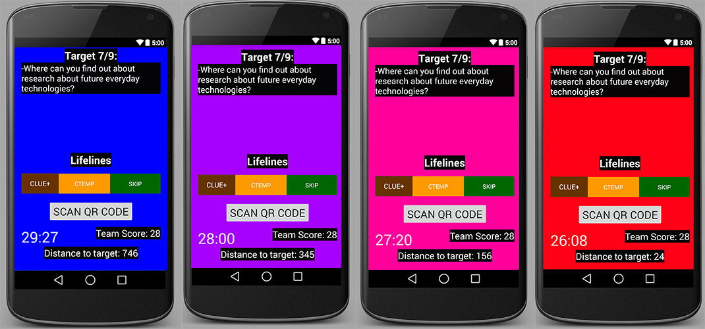
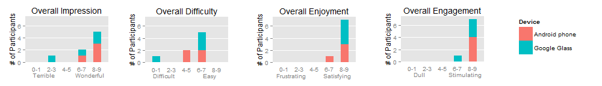
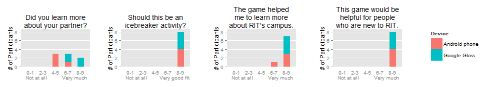

Wearable & Android App
Software
Java · Android SDK · Google Glass API · R
Hardware
Android Nexus · Google Glass
Skills Used
wireframing · prototyping · experiment design · conducting a user study
For this four-person group project, we developed a Google Glass scavenger hunt app, intended to be used by freshmen or transfer students learning about their new college campus. Users of the app were presented with clues about different locations around campus and needed to physically search for the buildings. Their location was tracked via GPS to provide them with real-time feedback. We also developed the app for an Android phone and conducted a user study to compare user preferences between the Glass version and the phone version.
I was lead developer for the Glass version of the app. During the project, I learned a lot about the Google Glass API and how to design an interface for a head-up display. Wireframing the task flow was an important step before actually coding up the app. This step also helped with designing the Android phone version to ensure the two versions varied as little as possible.
I also assisted with development for the phone app, particularly for determining how to scan QR codes that could bring up information relevant to our scavenger hunt. The QR code scanning feature was needed for both versions of the app: when participants reached the current hinted location in the scavenger hunt, they would need to scan the nearby QR code to confirm they found the spot. The app could then move them onto the next location.
We also included "lifelines" in the app that the user could use if they needed more clues to find a location. One lifeline included an extra fact about the location. The second lifeline was a hot/cold feature where the background of the interface would change from blue to red, depending on the proximity of the user to the hinted location. This feature used GPS in order to determine the device's current distance from the location.
For the user study, we recruited 8 participants. We paired up our participants and assigned each team a set of devices: either they would be the Google Glass team or the Android phone team. We then had each team complete our scavenger hunt using the app, where they needed to find 9 locations across campus. The game was timed and scored: the fewer lifelines used to find a location, the more points scored. We had team members follow each of the groups in order to observe user interactions. After completing the scavenger hunt or running out of time, we then had participants also fill out a post-game survey to gather more data about their experiences.
Overall, participants enjoyed the scavenger hunt app both on Glass and on an Android phone. The main difference was the difficulty in learning how to use the Glass, as our participants had never used one before. We found that our app was successful in teaching people about our university's campus, and that it was also an enjoyable activity.
 While our study did not distinguish one interface as more preferred than the other, it did allow us to experiment with unique applications for the Google Glass and explore the potential for future wearable devices.